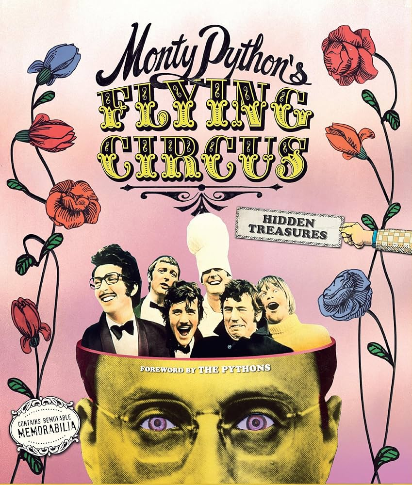

Python holds the #1 spot in the TIOBE Index for May 2025, the highest rating since 2001.
The TIOBE Index is a monthly ranking of programming language popularity based
on the number of search engine queries for each language.

The programming language Python was named
after the British sketch comedy group Monty Python, not the snake.
Guido van Rossum, Python's creator, was a big fan of the show
"Monty Python's Flying Circus" and chose the name as a tribute. This is why Python's
official documentation and examples often contain humorous references to Monty Python sketches.
The 80/20 principle, also called the Pareto Principle, is a rule that says 80% of
the results come from 20% of the efforts. If you learn the 20% of Python concepts
that are most important and used the most, you can get 80% of what you need to be good at it.